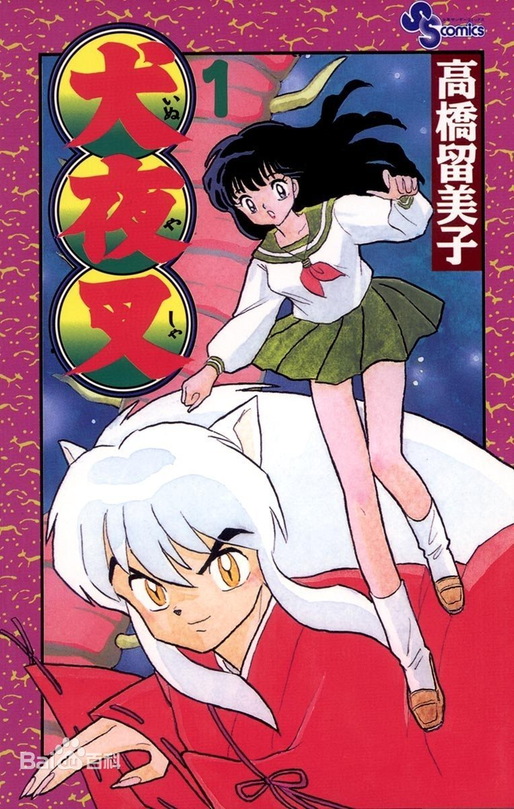

| 图片 | 名称 | 作者 | 集数 |
|---|---|---|---|
| 火影忍者 | 岸本齐史 | 720集（已完结）剧场版：11部 | |
| 海贼王 | 尾田荣一郎 | 最新更新929集（未完结）剧场版：14部 | |
 |
名侦探柯南 | 青山刚昌 | 最新更新1031（未完结）剧场版：24部 |
| 妖精的尾巴 | 真岛浩 | 328集（已完结）剧场版：2部 | |
 |
游戏王 | 高桥和希 | 224集（已完结）剧场版：3部 后续动漫：6部 |
| 银魂 | 空知英秋 | 368集（未完结）剧场版：2部 | |
| 神奇宝贝 | 田尻智 | 788集（已完结）剧场版：23部 | |
|  | 犬夜叉 | 高桥留美子 | 193集（已完结）剧场版：6部 |
| 夏目友人帐 | 绿川幸 | 第6季13集（已完结）ova版：8部||特别版：2部 |